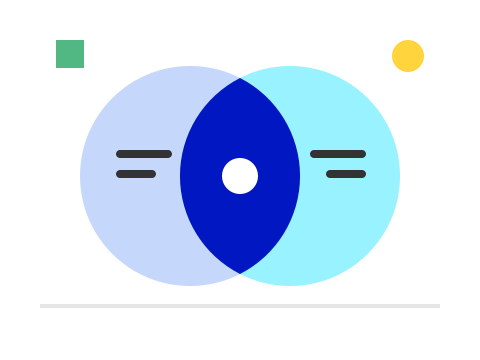
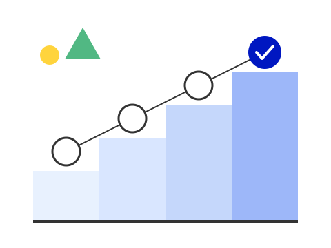

AI HANDOUT STUDIO
資料づくりを、 翌日提出できる速さに
自分の資料を、自分の手で速く仕上げる
01
作る流れ
2
かかる時間
30分で骨子、3回で仕上げ
30分
骨子づくり
テンプレートから
3回
画面での手直し
1枚あたり
4形式
書き出し
PDF / PNG / HTML / PPTX
手を動かすのは、画面で直す3回ぶんだけ。
3
分担
AIと自分で、持ち場を分ける

- 目的と読者をAIに伝える
- 骨子はJSONで返ってくる
- 画面で配置と文言を直す
- 見た目はテンプレートで替える
- PDFとPPTXで渡す
4
流れと形
4つの手順で、3つの形に渡す
- 1
伝える
目的と読者を書く
- 2
組む
骨子はJSONで
- 3
直す
画面で手直し
- 4
渡す
PDFとPPTXで
| 形式 | 方法 | 合格条件 |
|---|---|---|
| 同じHTMLを印刷する | 1スライド1ページ | |
| PPTX | DOMを実測して組み直す | 文字が選べて直せる |
| HTML | 1ファイルにまとめる | 開くだけで読める |
5
おしまい
まずは1枚、 作ってみる
見た目を選んで、骨子から始める
